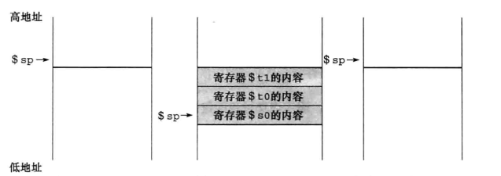
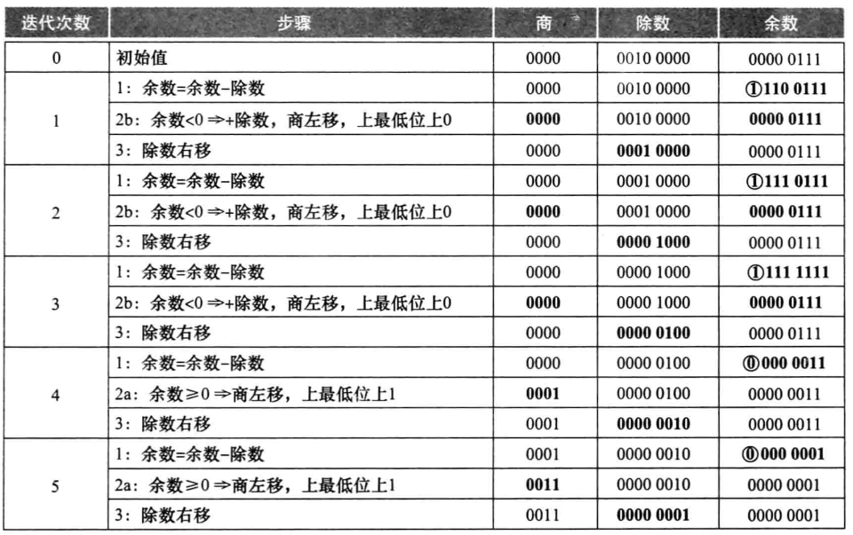
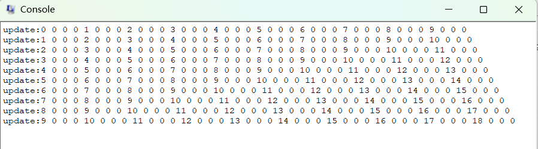
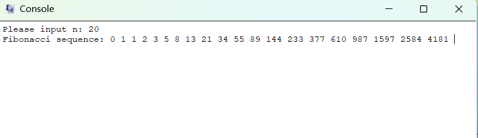
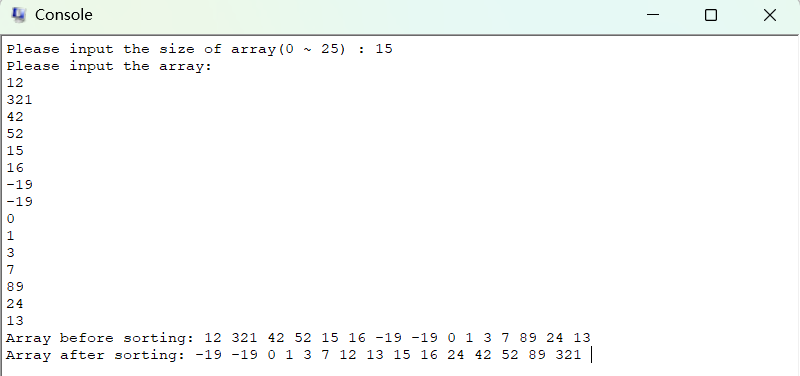

第二章
MIPS指令
| 指令 | 示例 | 含义 | 注释 |
|---|---|---|---|
| 加法 | add $s1,$s2,$s3 | $s1=$s2+$s3 | |
| 减法 | sub $s1,$s2,$s3 | $s1=$s2-$s3 | |
| 立即数加法 | addi $s1,$s2,20 | $s1=$s2+20 | 立即数即常数 |
| 乘法 | mul $s1,$s2,$s3 | $s1=$s2*$s3 | |
| 取立即数 | li $s0,5 | int $s0 = 5 | |
| 取字符串 | la $a0,space | char $a0 = “ “ | space需要在开头定义 |
| 赋值 | move $t0,$t1 | 将寄存器$t1中的数据传送至$t0 | |
| 输出 | syscall | 将$a0内的内容输出 | |
| 取字 | lw $s1,20($s2) | $s1=Memory[$s2+20]即a=b[5] | 括号外的字节数只能用常数，用于取数组值 |
| 存字 | sw $s1,20($s2) | Memory[$s2+20]=$s1即b[5]=a | 用于对数组赋值 |
| 取半字 | lh $s1,20($s2) | $s1=Memory[$s2+20] | 取字是该地址后四个字节，半字则两个字节 |
| 取无符号半字 | lhu $s1,20($s2) | $s1=Memory[$s2+20] | 顾名思义，无符号 |
| 存半字 | sh $s1,20($s2) | Memory[$s2+20]=$s1 | |
| 取字节 | lb $s1,20($s2) | $s1=Memory[$s2+20] | 取一个字节 |
| 取无符号字节 | lbu $s1,20($s2) | $s1=Memory[$s2+20] | |
| 存字节 | sb $s1,20($s2) | Memory[$s2+20]=$s1 | |
| 取链接字 | ll $s1,20($s2) | $s1=Memory[$s2+20] | |
| 存条件字 | sc $s1,20($s2) | Memory[$s2+20]=$s1;$s1=o or 1 | |
| 取立即数的高位 | lui $s1,20 | $s1=202^16* | |
| 与 | and $s1,$s2,$s3 | $s1=$s2 & $s3 | 按位与 |
| 或 | or $s1,$s2,$s3 | $s1=$s2 | $s3 | 按位或 |
| 或非 | nor $s1,$s2,$s3 | $s1=~($s2 | $s3) | 按位或非 |
| 异或 | xor $s1,$s2,$s3 | 异或 | 异或 |
| 立即数与 | andi $s1,$s2,20 | $s1=$s2 & 20 | |
| 立即数或 | ori $s1,$s2,20 | $s1=$s2 | 20 | |
| 逻辑左移 | sll $s1,$s2,10 | $s1=$s2<<10 | 左移n位等同于乘2^n |
| 逻辑右移 | srl $s1,$s2,10 | $s1=$s2>>10 | 除2^n |
| 相等时跳转 | beq $s1,$s1,Else | if($s1==$s2) go to Else | Else一般是后面定义的一个标签 |
| 不相等时跳转 | bne $s1,$s1,Else | if($s1!=$s2) go to Else | |
| 小于时置位 | slt $s1,$s2,$s3 | if($s2<$s3) $s1=1;else $s1=0 | 前小于后则赋1 |
| 无符号数比较小于时置位 | sltu $s1,$s2,$s3 | if($s2<$s3) $s1=1;else $s1=0 | 无符号数 |
| 无符号数比较小于立即数时置位 | slti $s1,$s2,$s3 | if($s2<20) $s1=1;else $s1=0 | 比较是否小于常数 |
| 无符号数比较小于无符号立即数时置位 | sltiu $s1,$s2,$s3 | if($s2<20) $s1=1;else $s1=0 | 比较是否小于无符号常数 |
| 跳转 | j 2500 | go to 10000 | 当然标签也可以 |
| 跳转至寄存器所指位置 | jr $ra | go to $ra | 用于switch以及过程调用 |
| 跳转并且链接 | jal 2500 | $ra=PC+4;go to 10000 | 用于过程调用 |
32位寄存器
| 表示 | 作用 | 注释 | 位置 |
|---|---|---|---|
| $zero | 寄存器的值恒为0 | 1 | |
| $v0~$v1 | 计算结果，返回值 | 用于返回值 | 2~3 |
| $a0~$a3 | 用于进入函数时传递参数 | 4~7 | |
| $s0~$s7 | 保留寄存器 | 一般存一些重要的值 | 16~23 |
| $t0~$t9 | 临时寄存器 | 其它函数或循环等中的临时变量 | 8 |
| $at | 汇编器保留，用于处理大的常数 | ||
| $sp | 栈指针 | 进入其它函数时 | 29 |
| $ra | 返回指针 | 用于返回起始点的返回地址寄存器 | 31 |
| $gp | 全局指针 | 指向静态数据区的保留寄存器,全局变量或static变量 | |
| $fp | 帧指针 | ||
| $k0~$k1 |
机器指令
R型
op与funct为六位，其他五位，加起来正好三十二位
| 例 | op(操作码) | rs(操作数寄存器) | rt(操作数寄存器) | rd(目的寄存器) | shamt(位移量) | funct(功能码) |
|---|---|---|---|---|---|---|
| add $t0, $s1, $s2 | 0 | 17($s1) | 18($s2) | 8($t0) | 0 | 32 |
| sub | 0 | reg | reg | reg | 0 | 34 |
I型
因rd寄存器只有五位(<32)，限制太大，故设计I型
constant or address包含rd,shamt,funct，所以十六位
rt变为目的寄存器
| 例 | op | rs | rt | constant or address |
|---|---|---|---|---|
| addi | 8 | reg | reg | address |
| lw | 35 | reg | reg | address |
| sw | 43 | reg | reg | address |
| lw $t0,300($t1) | 35 | 9 | 8 | 1200(300 * 4) |
address表示十六位地址
逻辑操作
移位(>><<)
逻辑左移 (sll)：将一个字里面的所有位都向左移动，并在空出来的位上填充 0。
逻辑右移 (srl)：将一个字里面的所有位都向左移动，并在空出来的位上填充 0。
左移 𝑖 位就相当于乘以 2^𝑖，右移即除
按位与(AND)
AND 提供了一种将源操作数中某些位置为0 的能力，前提是另一个操作数中对应位为0。后一个操作数传统上被称为掩码(mask) ，寓意其可”隐藏”某些位。
上下都为 1 则结果为 1
按位或(OR)
上下任意一数为 1 则结果为 1
按位取反(NOT)
对一个数进行操作，1变成0，0变成1
或非(NOT OR)
顾名思义，先或再取反
异或(XOR)
相同置1，不相同置0
示例
叶过程
C 程序
2
3
4
5
6
{
int f;
f = (g + h) - (i + j);
return f;
}编译后的MIPS 汇编代码是什么呢?
参数变量 g 、h 、i 和 j 对应参数寄存器 $a0 、$a1 、$a2 和$a3，f 对应 $s0
假定需要保留$s0,$t0和$t1这三个寄存器
解
2
3
4
5
6
7
8
9
10
11
12
13
14
addi $sp,$sp,-12 #将栈指针$sp向低地址压3个字用于保留原寄存器的值
sw $t1, 8($sp)
sw $t0, 4($sp)
sw $s0, 0($sp) #保存原值
add $t0, $a0, $a1 # register $t0 contains g+h
add $t1, $a2, $a3 # register $t1 contains i+j
sub $s0, $t0, $t1 # f = (g + h) - (i + j)
add $v0, $t0, $t1 # 将f的值存进返回值寄存器$v0用于返回值
lw $s0, 0($sp)
lw $t0, 4($sp)
lw $t1, 8($sp) #恢复原值
addi $sp, $sp, 12 #恢复栈指针原来的位置
jr $ra #根据跳转寄存器中的返回地址跳转栈的作用图

这个过程可叫做叶过程，即不调用其他过程的过程
一般来说
| 保留 | 不保留 |
|---|---|
| $s0~$s7 | $t0~$t9 |
| $sp | $a0~$a3 |
| $ra | $v0~$v1 |
| 栈指针以上的栈 | 栈指针以下的栈 |
非叶过程
如果是非叶过程，即调用该过程的中途也要调用其他过程，可能会导致寄存器使用冲突
解决方法就是将所有必须保留的寄存器压栈
- 调用者将所有调用后还需要的参数寄存器 ($a0 - $a3) 或临时寄存器 ($t0 - $t9) 压栈
- 被调用者将返回地址寄存器$ra和被调用者使用的保留寄存器( $s0 - $s7) 都压栈
- 栈指针$sp随着栈中寄存器个数调整。到返回时，寄存器会从存储器中恢复，栈指针也随着重新调整。
递归过程
重复调用函数
下面是一个计算阶乘的递归过程:
2
3
4
5
6
if(n<1)
return(1);
else
return ( n * fact(n -1));
}该过程的MIPS 汇编代码是怎样的呢?
解
2
3
4
5
6
7
8
9
10
11
12
13
14
15
16
17
addi $sp, $sp, -8
sw $ra, 4($sp) #根据上述叶过程需保留 $ra
sw $a0, 0($sp) #同样，参数寄存器 $a0(<==>n) 也需要保留
slti $t0, $a0, 1 # $a0 < 1 时 $t0 置 1
beq $t0, $zero, L1 # if $t0 == 0, go to L1, else(即$t0 == 1) 则继续
addi $v0, $zero, 1 #retutn 1
addi $sp, $sp, 8 #并未进入其他过程，所以直接弹栈返回即可
jr $ra #return
L1:
addi $a0, $a0, -1 # gets n - 1
jal fact # call fact with (n - 1)
lw $a0, 0($sp) #接下来的部分属于 fact
lw $ra, 4($sp)
addi $sp, $sp, 8 #嵌套了其他过程，所以其他过程进行完后要恢复原值
mul $v0, $a0, $v0 #将上一过程的返回值乘 n 来得到现在过程的返回值
jr $ra #return
迭代过程
循环某一过程而非循环进入函数
考虑下面一个用来求和的过程:
2
3
4
5
6
if (n>0)
return sum (n – 1, acc + n) ;
else
return acc;
}该过程的MIPS 汇编代码是怎样的呢?
解
分析一下可知，如果 n>0 则令 n-1 并且使 acc+n
完完全全可以用循环代替
假设 $a0 = n $a1 = acc
2
3
4
5
6
7
8
slit $t0, $a0, 1 # $a0 < 1 时 $t0 置 1
bne $t0, $zero, sum_exit # if $t0 == 0 , go to sum_exit
add $a1, $a1, $a0 # acc = acc + n
addi $a0, $a0, -1 # go to sum
sum_exit:
add $v0, $a1, $zero #return acc
jr $ra #return
字符操作
一个 char 一字节，八比特，最高表示 127，即ASCII码的127位
所以对字符串的操作一般是 lb(字节读取) sb(字节存储)
C语言
2
3
4
5
6
int i;
i = 0;
while ((x[i] = y[i]) != '\0')
i += 1;
}编译后的MIPS汇编代码是什么？
解
假定数组 x 和 y 的基地址在 $a0 和 $a1 中，而 i 在 $s0 中
strcpy 调整栈指针然后将保存的寄存器 $s0 保存在栈中
2
3
4
5
6
7
8
9
10
11
12
13
14
15
16
addi $sp, $sp, -4
sw $s0, 0($sp)
add $s0, $zero, $zero # 初始化 i
L1:
add $t1, $s0, $a1 # get address y[i]
lbu $t2, 0($t1) # $t2 = y[i] 得到第 i 个字符
add $t3, $s0, $a0 # get address x[i]
sb $t2, 0($t3) # x[i] = y[i]
beq $t2, $zero, L2 # if y[i] == 0 , go to L2
addi $s0, $s0, 1 # i = i + 1
j L1 # 不是则继续循环 L1
L2:
lw $s0, 0($sp)
addi $sp, $sp, 4
jr $ra #return
注意
- 一个字四个字节，一个字节八比特
- 负数一般用补码表示(取反后 +1)
- 无符号数即把符号位也当成一位数，如-1的无符号数为为4294967295
- 如果参数多于参数寄存器的数量(4)，MIPS约定将额外参数放在栈指针的上方
利用无符号数进行边界检查
可降低检验下标是否越界的开销
1 | sltu $t0, $s1, $t2 # $t0=0 if $s1 >= $t2 or $s1 <0 |
第三章
加减法
溢出
由于字宽只有32位，所以在运算中会发生溢出
1 | 0100 0000 0000 0000 0000 0000 0000 0111 |
溢出会导致异常
同号的数相减，不会溢出
异号的数相加，不会溢出
对无符号数处理的算术指令，不会产生异常(addu,addiu,subu…)
溢出的判断
有符号加法
若输入的两数据符号位相同，而输出的数据符号位与前数据不同，则鉴定为溢出，抛出异常
其他同理
乘法
十进制下 1000 × 1001
1 | 1000 |
看不太懂这个图，反正就那意思😣
除法
两者对于符号位的处理都是，同号为正，异号为负
浮点数
单精度浮点数：指数域8位，尾数域2位，符号1位。
计组大作业
第一题
将下面的C代码翻译为MIPS汇编代码。要求使用的指令数目最少。假设值a、b、i和j分别存放在寄存器$s0、$s1、$t0和$t1中。另外假设寄存器$s2中存放着数组D的基地址
2
3
4
5
for (j = 0; j < b; j++) {
D[4*j] = i + j;
}
}
解
设定a=10,b=10,完成数组D[]的更新，并输出数组信息；
2
3
4
5
6
7
8
9
10
11
12
13
14
15
16
17
18
19
20
21
22
23
24
25
26
27
28
29
30
31
32
33
34
35
36
37
38
39
40
41
42
43
44
45
46
47
48
49
50
51
52
53
54
55
56
57
58
59
60
61
62
63
64
65
66
67
68
69
70
71
72
73
74
75
76
77
78
# Date: 2022-12-17
.data
array_D: .space 160
updateMsg: .asciiz "update:"
line: .asciiz "\n"
space: .asciiz " "
.text
main:
# save a, b, D[]
addi $sp, $sp, -12
sw $s0, 8($sp)
sw $s1, 4($sp)
sw $s2, 0($sp)
#initialization
addi $s0, $zero, 10 # a = 10
addi $s1, $zero, 10 # b = 10
la $s2, array_D # D with 160 space
li $t0, 0 # int i = 0
first_loop:
# if i < a
bge $t0, $s0, loop1_exit # bge if $t0 ≥ $s0 , j loop1_exit
li $t1, 0 # int j = 0
second_loop:
# if j < b
bge $t1, $s1, loop2_exit
add $t2, $t0, $t1 # i + j
sll $t3, $t1, 4 # t3 = 4 * 4 * j
add $t3, $t3, $s2 # address of D[4 * j]
sw $t2, 0($t3) # D[4 * j] = i + j
addi $t1, $t1, 1 # j++
j second_loop
loop2_exit:
# print updateMsg
li $v0, 4
la $a0, updateMsg
syscall
# print array
jal print_array
addi $t0, $t0, 1 # i++
j first_loop
loop1_exit:
lw $s2, 8($sp)
lw $s1, 4($sp)
lw $s0, 0($sp)
addi $sp, $sp, 12
li $v0, 10
syscall
print_array:
move $t2, $s2 # $t2 = D[]
li $t1, 0 # $t1 = k
print_loop:
li $t3, 40
bge $t1, $t3, loop_done # if k ≥ 40, done
# array
li $v0, 1
lw $t4, 0($t2)
move $a0, $t4
syscall
# space
li $v0, 4
la $a0, space
syscall
# next loop
addi $t2, $t2, 4
addi $t1, $t1, 1
j print_loop
loop_done:
# next line
li $v0, 4
la $a0, line
syscall
jr $ra经测试无误

第二题
完成斐奇那波数列 **F[n] = F[n-1] + F[n-2]**，设定任意的n值，并实现数列输出
考虑到数列只需要输出而无需保存，写出C代码
2
3
4
5
6
7
8
9
10
int t1 = 1;
int i = 0;
while (i < n) {
printf("%d",t0);
int t2 = t0 + t1;
t0 = t1;
t1 = t2;
i ++;
}由以上C代码写出汇编代码
解
2
3
4
5
6
7
8
9
10
11
12
13
14
15
16
17
18
19
20
21
22
23
24
25
26
27
28
29
30
31
32
33
34
35
36
37
38
39
40
41
42
43
44
45
46
47
48
49
50
51
52
#Date: 2022-12-18
.data
input_msg: .asciiz "Please input n: "
output_msg: .asciiz "Fibonacci sequence: "
space: .asciiz " "
.text
main:
# save $s0
addi $sp, $sp, -4
sw $s0, 0($sp)
# "Please input n: "
li $v0, 4
la $a0, input_msg
syscall
# get n
li $v0, 5
syscall
move $s0, $v0
# "Fibonacci sequence: "
li $v0, 4
la $a0, output_msg
syscall
# Fibonacci
li $t0, 0
li $t1, 1
li $t3, 0 # i = 0
loop:
bge $t3, $s0, done # if i ≥ n, go done
# print t0
li $v0, 1
move $a0, $t0
syscall
# print space
li $v0, 4
la $a0, space
syscall
add $t2, $t0, $t1 # int t2 = t0 + t1
move $t0, $t1 # t0 = t1
move $t1, $t2 # t1 = t2
addi $t3, $t3, 1 # i ++
j loop
done:
addi, $sp, $sp, 4
lw $s0, 0($sp)
li $v0, 10
syscall经测试无误

第三题
输入n个数据，并采用冒泡排序，然后输出显示。
C代码
2
3
4
5
6
7
8
9
for (int j = 0; j < n - i - 1; j++){
if (arr[j] > arr[j + 1]) {
int temp = arr[j];
arr[j] = arr[j + 1];
arr[j + 1] = temp;
}
}
}由以上C代码写出汇编代码
解
2
3
4
5
6
7
8
9
10
11
12
13
14
15
16
17
18
19
20
21
22
23
24
25
26
27
28
29
30
31
32
33
34
35
36
37
38
39
40
41
42
43
44
45
46
47
48
49
50
51
52
53
54
55
56
57
58
59
60
61
62
63
64
65
66
67
68
69
70
71
72
73
74
75
76
77
78
79
80
81
82
83
84
85
86
87
88
89
90
91
92
93
94
95
96
97
98
99
100
101
102
103
104
105
106
107
108
109
110
111
112
113
114
115
116
117
118
119
120
121
122
123
124
125
126
127
128
129
130
131
132
133
134
135
136
# Date: 2022-12-18
.data
array: .space 100
space: .asciiz " "
line: .asciiz "\n"
input_msg: .asciiz "Please input the size of array(0 ~ 25) : "
array_msg: .asciiz "Please input the array: "
error_msg: .asciiz "Error: Invalid number"
before_msg: .asciiz "Array before sorting: "
after_msg: .asciiz "Array after sorting: "
.text
main:
addi $sp, $sp, -8
sw $s0, 0($sp)
sw $s1, 4($sp)
# "Please input the size of array(0~25): "
li $v0, 4
la $a0, input_msg
syscall
# get n
li $v0, 5
syscall
move $s0, $v0
# check if error
li $t0, 25
bgt $s0, $t0, error
ble $s0, $zero, error
# get array
# "Please input the array: "
li $v0, 4
la $a0, array_msg
syscall
# new line
li $v0, 4
la $a0, line
syscall
la $s1, array # Init array
move $t0, $s1
li $t1, 0 # int i = 0
input_loop:
bge $t1, $s0, input_done # if i ≥ n, go done
li $v0, 5
syscall
sw $v0, 0($t0)
addi $t0, $t0, 4
addi $t1, $t1, 1
j input_loop
input_done:
# "Array before sorting: "
li $v0, 4
la $a0, before_msg
syscall
jal print_array
# Bubble sort
li $t1, 0 # int i = 0
first_loop:
bge $t1, $s0, loop1_done # if i ≥ n , go done
li $t2, 0 # int j = 0
move $t0, $s1
second_loop:
addi $t3, $s0, -1 # get size - 1
sub $t3, $t3, $t1 # get size - i - 1
bge $t2, $t3, loop2_done
lw $t3, 0($t0) # $t3 = arr[j]
lw $t4, 4($t0) # $t4 = arr[j + 1]
# if arr[j] > arr[j + 1], swap
# else, do nothing
ble $t3, $t4, swap_done
sw $t3, 4($t0)
sw $t4, 0($t0)
swap_done:
addi $t2, $t2, 1 # j ++
addi $t0, $t0, 4 # next
j second_loop
loop2_done:
addi $t1, $t1, 1 # i ++
j first_loop
loop1_done:
# line
li $v0, 4
la $a0, line
syscall
# "Array after sorting: "
li $v0, 4
la $a0, after_msg
syscall
jal print_array
exit:
lw $s0, 0($sp)
lw $s1, 4($sp)
addi $sp, $sp, 8
li $v0, 10
syscall
print_array:
move $t0, $s1
li $t1, 0 # int i = 0
print_loop:
bge $t1, $s0, print_done
lw $t2, 0($t0)
# print number
li $v0, 1
move $a0, $t2
syscall
# print space
li $v0, 4
la $a0, space
syscall
# next
addi $t0, $t0, 4
addi $t1, $t1, 1 # i++
j print_loop
print_done:
jr $ra
error:
# "Error: Invalid number"
li $v0, 4
la $a0, error_msg
syscall
j exit经测试无误
